The Alpine Sanctuary & 3D Explorations
A high-immersion architectural wellness retreat modeled and rendered entirely in Blender — exploring atmospheric lighting contrasts, material tactile physics, and asset development.

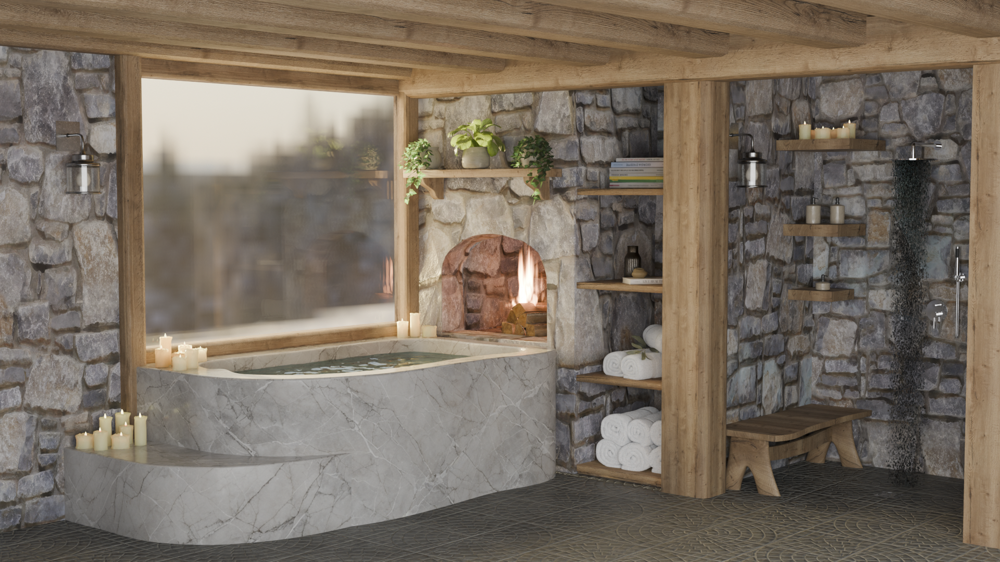
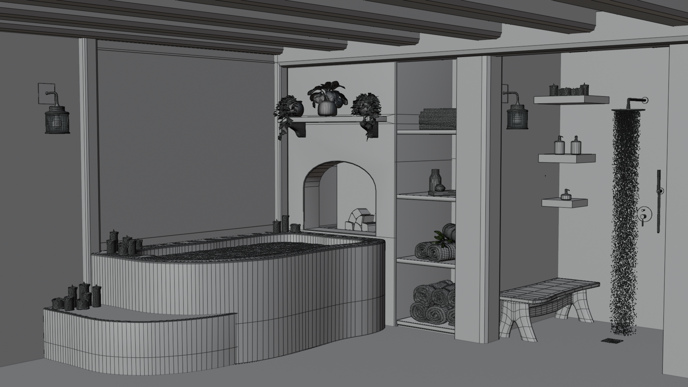
The Concept: Warmth vs. Winter
The Alpine Sanctuary was developed as the comprehensive final term project in 3D Design. The spatial concept creates tension between the freezing mountain outdoors and a safe, protective sanctuary within. Anchored around a custom marble hot tub situated by a floor-to-ceiling panoramic window, the scene balances rustic stone masonry, heavy timber ceiling beams, an open wood fireplace, and an integrated rain shower.
Materiality, Sculpting & Lighting
From initial floor plan sketches to final Cycles rendering, each asset was custom built. Pillar candles were crafted with organic wax melting profiles via digital sculpting, silver wall lanterns cast warm ambient accents, and stone texture displacement maps provide physical tactile depth. Atmospheric lighting utilizes volumetric warmth from the fireplace and glowing candle wicks against the cool winter exterior.
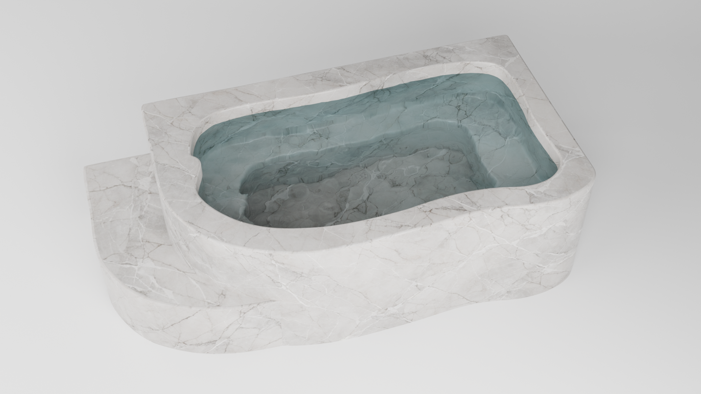
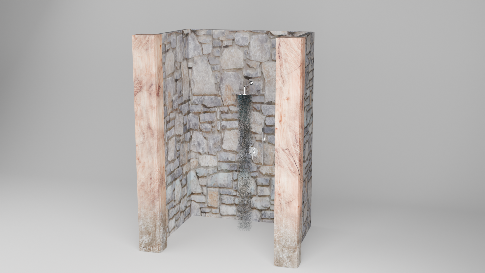
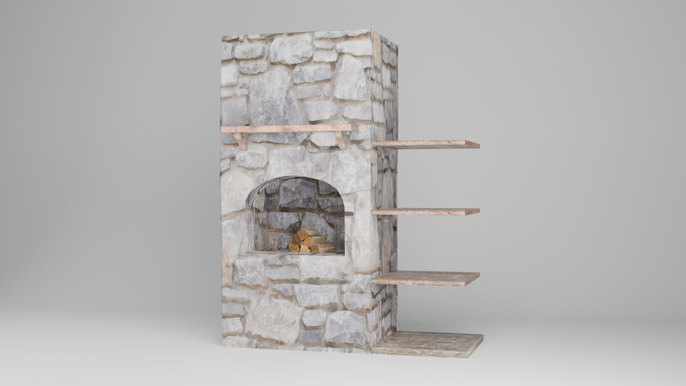
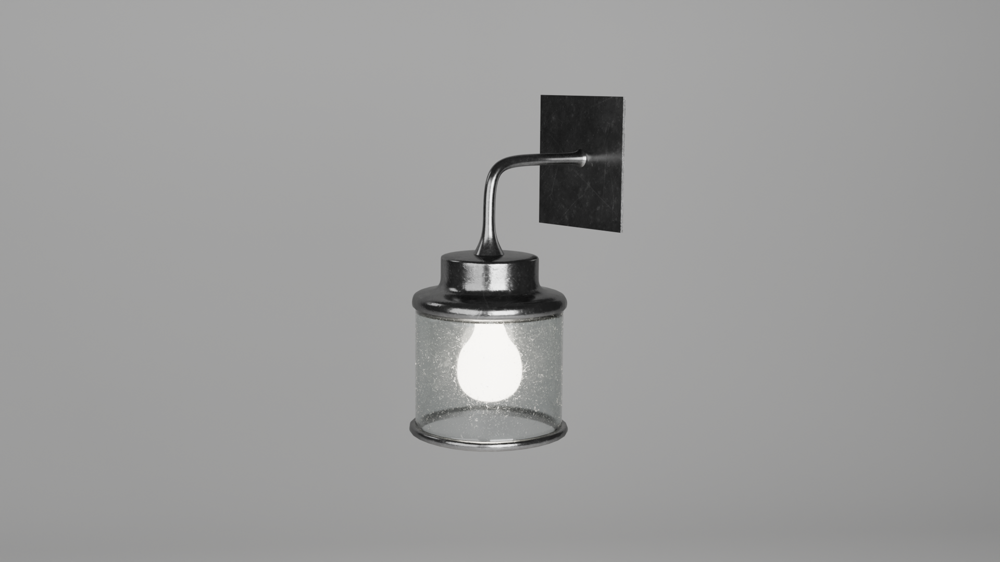
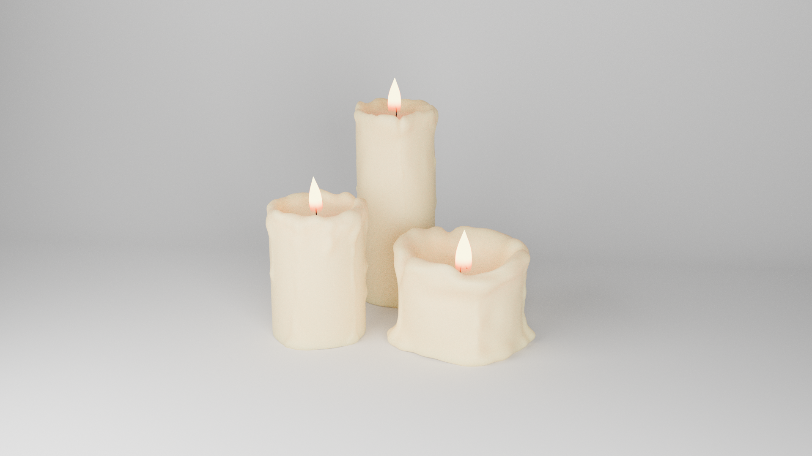
Further 3D Modeling & Rendering Projects
Semester assignments exploring product modeling, realistic procedural wood shaders, hard-surface topology, and stylized low-poly architecture.
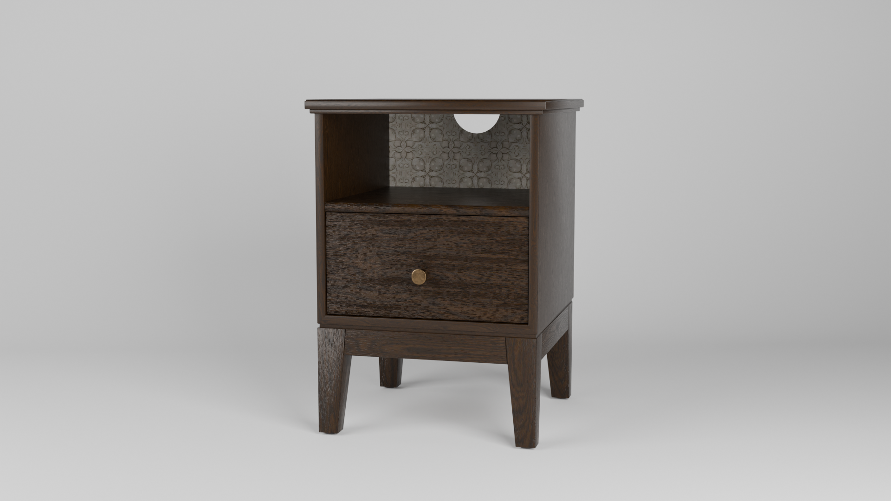
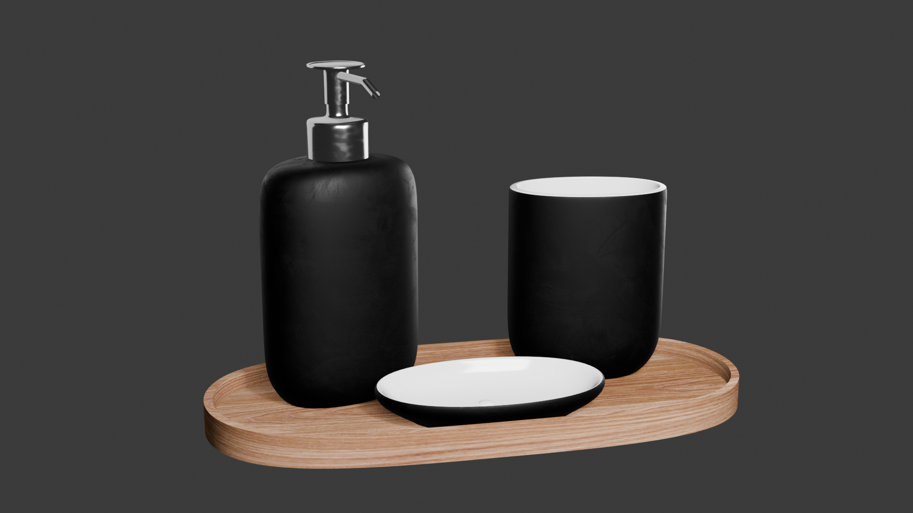
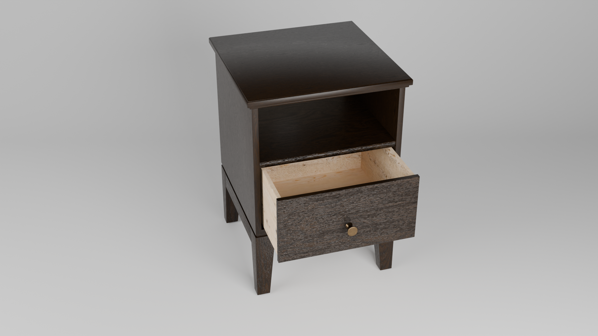
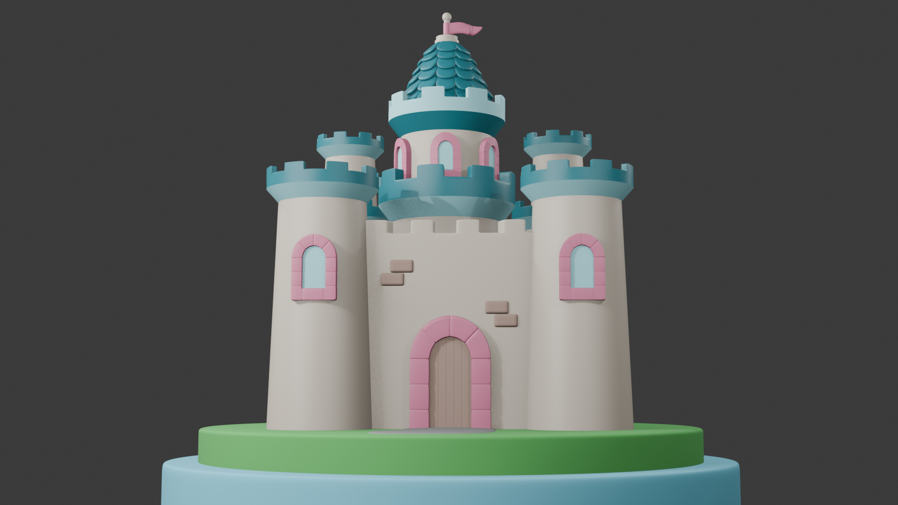
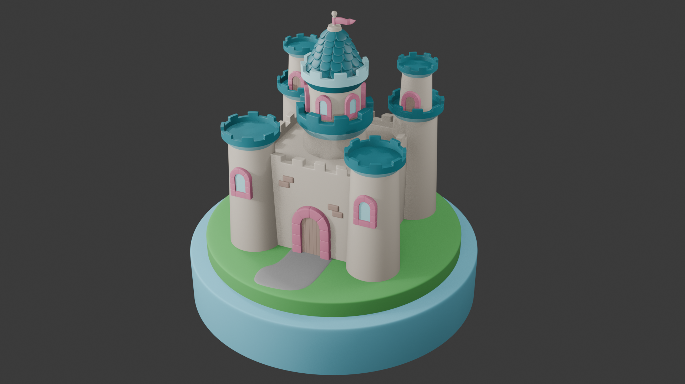